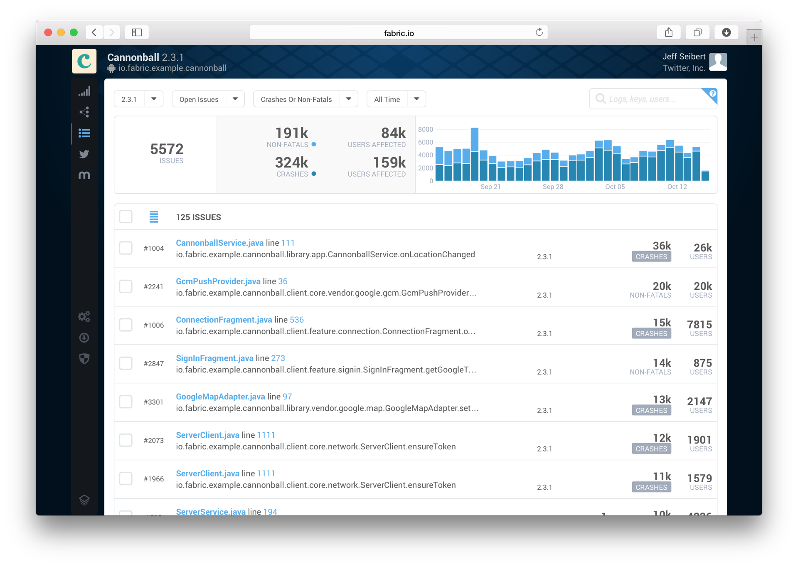

<!DOCTYPE html><html lang="en"></html><head><meta charset="utf-8"><title>reveal.js - The HTML Presentation Framework</title><meta name="description" content="A framework for easily creating beautiful presentations using HTML"><meta name="author" content="Hakim El Hattab"><meta name="apple-mobile-web-app-capable" content="yes"><meta name="apple-mobile-web-app-status-bar-style" content="black-translucent"><meta name="viewport" content="width=device-width, initial-scale=1.0, maximum-scale=1.0, user-scalable=no, minimal-ui"><link rel="stylesheet" href="css/reveal.css"><link id="theme" rel="stylesheet" href="css/theme/black.css"><!-- Code syntax highlighting--><link rel="stylesheet" href="lib/css/zenburn.css"><!-- Printing and PDF exports--><link rel="stylesheet" href="css/extra-components.css"><script>var link = document.createElement( 'link' );
link.rel = 'stylesheet';
link.type = 'text/css';
link.href = window.location.search.match( /print-pdf/gi ) ? 'css/print/pdf.css' : 'css/print/paper.css';
document.getElementsByTagName( 'head' )[0].appendChild( link );</script><!--if lt IE 9script(src='lib/js/html5shiv.js')
--></head><body><div class="reveal"><!-- Any section element inside of this container is displayed as a slide--><div class="slides"><section><h2>Builds are people too</h2><div><p>Presentation by Jake Ouellette (@Jakeout)</p></div></section><section><p>Builds</p><div class="fragment replaceafter"></div><div class="fragment replaceafter"></div><div class="fragment replaceafter"></div><div class="fragment replaceafter"></div><aside class="notes"><p>this is a talk about your development environment</p><p>that power creating your application</p><p>But the development environments are created by you</p><p>And how you set them up impacts your team</p></aside></section><section><p>About me</p><aside class="notes"><p>I'm Jake Ouellette, I work @ Twitter on a team called fabric</p></aside></section><section><p>Fabric</p><aside class="notes"><p>What have I built?  I work at Twitter, on Twitter's Mobile platform, fabric. </p><p>Fabric is a suite of Mobile SDKs which developers use to enhance their application</p><p>One example build tool is Crashlytics.</p></aside></section><section><p>crashlytics</p><aside class="notes">Crashes as a service.</aside></section><section><p>crashes-as-a-service</p></section><section><div class="fragment replaceafter"></div><aside class="notes"><p>TODO: add detail here of why</p><p>And this is solved by a developer tool.</p><p>I have had a lot of opportunities to look at people's build scripts</p></aside></section><section><p class="fragment replaceafter">big data...</p><p class="fragment">big "build"</p><aside class="notes"><p>A lot of developers are concerned about big data</p><p>But one thing they often aren't concerned is sprawling complexity of their build</p></aside></section><section><div class="fragment replaceafter"></div><div class="fragment replaceafter"></div><aside class="notes"><p>When you first start a project, you make the best build ever</p><p>you understand it -- makes total sense to you</p></aside></section><section><div class="fragment replaceafter"></div><div class="fragment replaceafter"></div><div class="fragment replaceafter"></div><div class="fragment replaceafter"></div><aside class="notes"><p>Over time, you add more and more people to your team</p><p>And all of these people work in your build</p></aside></section><section><div class="fragment replaceafter"></div></section><section><div class="fragment replaceafter"></div><div class="fragment replaceafter"></div><aside class="notes"><p>As more engineers join, they add more "stuff"</p><p>slows down the build, from your perspective</p><p>Maybe the second line shows the effort to fix it</p><p>So the build might not be that complex, but the effort increases exponentially</p></aside></section><section><div class="fragment replaceafter"></div><div class="fragment replaceafter"></div><aside class="notes"><p>A new engineer joins...</p><p>code has always been that way.</p><p>Build's health is down</p></aside></section><section><aside class="notes"><p>And they go to compile, and suddenly have to wait</p></aside></section><section><div class="fragment replaceafter"></div><aside class="notes"><p>And to them, it's seriously always been this way</p><p>And not their responsibility to fix it</p></aside></section><section><p>Overview</p><aside class="notes"><p>What causes a big build</p><p>Strategies to prevent it.</p></aside></section><section><p>Tool nightmare</p><ul><li class="fragment">rake</li><li class="fragment">maven</li><li class="fragment">ant</li><li class="fragment">shell scripts</li><li class="fragment">gradle</li></ul><aside class="notes"><p>using tools</p><p>We make an SDK for android developers</p><p>Android developers use gradle, so we needed to make a gradle plugin</p></aside></section><section><ul><li class="fragment">reduce number of tools you're using</li><li class="fragment">Twitter: Pants</li><li class="fragment">Facebook: Buck</li><li class="fragment">Google: Bazel</li></ul><aside class="notes"><p>Google, for example, statically links everything</p></aside></section><section><div class="fragment replaceafter"></div><div class="fragment replaceafter"></div><div class="fragment replaceafter"></div><aside class="notes"><p>TODO: add something for the middle slides</p><p>Describing degenerate m2 cache example</p><ul><li>Files built, then copied into other folders</li><li>Files published to maven local</li><li>Files linked using gradle / maven project linking</li></ul></aside></section><section><p>Version nightmare</p><div class="fragment replaceafter"></div><div class="fragment replaceafter"></div><div class="fragment replaceafter"></div><aside class="notes"><ul><p>TODO: talk about how this worked locally</p><li>change util</li><li>not change artifact that depended on it</li><li>artifact broken</li><li>artifact was poorly unit tested</li></ul></aside></section><section><p>Meanwhile, at non-Fabric Twitter</p><p>a tale of two repos</p><div class="fragment replaceafter"></div><div class="fragment replaceafter"></div><div class="fragment replaceafter"></div><div class="fragment replaceafter"></div></section><section><p>Meanwhile, at Google</p><div class="fragment replaceafter"></div><div class="fragment replaceafter"></div><div class="fragment replaceafter"></div><aside class="notes"><ul><li>monorepo</li><li>everything on master</li><li>trunk based development</li></ul><p>Downside of google approach</p><ul><li>You change something, break other people's things</li><li>Fear of using other's work</li></ul></aside></section><section><ul><li class="fragment">reduce upstream breakages</li><li class="fragment">minimize version bumping complexity (if not monorepo, then automated)</li><li class="fragment">maximize test coverage</li></ul><aside class="notes"><p>TODO: Note version bumping sucks</p></aside></section><section></section><section><div class="fragment replaceafter"></div><div class="fragment replaceafter"></div><aside class="notes"><p>Might be trying to reduce the number of things you build</p><p>Also, make things more reusable</p><p>But then you have to decide how things are wired up</p></aside></section><section><div class="fragment replaceafter"></div><div class="fragment replaceafter"></div><div class="fragment replaceafter"></div><div class="fragment replaceafter"></div><div class="fragment replaceafter"></div><div class="fragment replaceafter"></div><aside class="notes"><p>Might have an artifact with a dependency, represented through transitives</p><p>Using a dependency for a transitives</p><p>If it is removed:</p><p>have to find what broke your build</p><p>Be explicit with transitive dependencies</p></aside></section><section><p>Crashlytics exception</p><div class="fragment replaceafter"></div><div class="fragment replaceafter"></div><div class="fragment replaceafter"></div><aside class="notes"><ul><li>It's crashlytics, then transitives</li><li>Transitives are used here, but</li><li>is the fact that everything is grouped in a module more likely to reduce issues?</li></ul></aside></section><section><div class="fragment replaceafter"></div><div class="fragment replaceafter"></div></section><section><p>Builds with History</p></section><section><pre class="leftalign">crashlytics/</pre><pre class="leftalign">   - sdk</pre><pre class="leftalign">   - util/devtools/buildSystems/maven</pre></section><section><pre class="leftalign">crashlytics/</pre><pre class="leftalign">   - <strike>sdk</strike></pre><pre class="leftalign">   - util/devtools/buildSystems/maven</pre><aside class="notes"><p>TODO: DELETE folders in image</p></aside></section><section><pre class="leftalign">crashlytics/</pre><pre class="leftalign">   - maven</pre><div class="fragment replaceafter"></div><div class="fragment replaceafter"></div><div class="fragment replaceafter"></div><aside class="notes"><p>We have a folder that moved to a subfolder,</p><p>Never fixed it</p><p>Permanently have to explain to new devs</p></aside></section><section><ul><li class="fragment">What is dead may never die</li><li class="fragment">cut ties to old build scripts</li><li class="fragment">make things easy to update on CI</li></ul><aside class="notes"><p>Any time you find yourself explaining old code,</p><p>Delete it.</p></aside></section><section><strong>Building multiple ways</strong></section><section><div class="fragment replaceafter"></div><div class="fragment replaceafter"></div><div class="fragment replaceafter"></div><div class="fragment replaceafter"></div><div class="fragment replaceafter"></div><div class="fragment replaceafter"></div><div class="fragment replaceafter"></div></section><section><p>Maximize build-consistency</p><ul><li class="fragment dimafter">Abandon IDE builders</li><li class="fragment dimafter">Make CI configuration minimal</li><li class="fragment dimafter">Make incremental command line builds awesome</li></ul><aside class="notes"><p>Get more specific, what do you mean by IDE builder?</p></aside></section><section><strong>Organic buildscript reuse</strong></section><section><div class="fragment replaceafter"></div><div class="fragment replaceafter"></div><div class="fragment replaceafter"></div><div class="fragment replaceafter"></div><div class="fragment replaceafter"></div><aside class="notes"><p>TODO: add image of someone copying file to other persons machine</p><strong>who uses the build scripts?</strong><ol><li>Let's say you have a buildscript</li><li>If a coworker needs one for a new project, often they'll take yours</li><li>Ant lacks idioms, and so maybe, there was only one ant script ever written?</li><li>And what do you do if this happens across your organization? Everyone cutting and pasting from builds. There's a lot of repetition of knowledge</li></ol></aside></section><section><div class="fragment replaceafter"></div><div class="fragment replaceafter"></div><div class="fragment replaceafter"></div><aside class="notes"><ol><li>So yeah, if you have a build that other scripts are reusing</li><li>One way to think about complexity is how many non project-specific things can be shared</li></ol></aside></section><section><strong>Untracked build steps</strong></section><section><div class="fragment replaceafter"></div><div class="fragment replaceafter"></div><div class="fragment replaceafter"></div><div class="fragment replaceafter"></div><div class="fragment replaceafter"></div><div class="fragment replaceafter"></div><div class="fragment replaceafter"></div><aside class="notes"><ul><li>Keystore</li><li>Style guide</li><li>Initialization</li><li>Extra brew steps</li></ul></aside></section><section><p>Streamline environment</p><ul><li class="fragment dimafter">Avoid for uncommitted build steps</li><li class="fragment dimafter">CI build tasks 99% same as local</li></ul><aside class="notes"><p>On last one: keep config steps like env variables uniform</p><p>TODO: "Keep configuration steps uniform -- describe why not doing this is bad"</p></aside></section><section><p>OK!</p><aside class="notes"><p>OK! that's why your build in complicated.</p></aside></section><section><p>But... when do I fix it?</p></section><section><div class="fragment replaceafter"></div><div class="fragment replaceafter"></div><aside class="notes"><ol><li>immediately?</li><li>eventually?</li></ol></aside></section><section><div class="fragment replaceafter"></div><div class="fragment replaceafter"></div><div class="fragment replaceafter"></div></section><section><p>Build-debt is code-debt</p></section><section><div class="fragment replaceafter"></div><div class="fragment replaceafter"></div><div class="fragment replaceafter"></div><div class="fragment replaceafter"></div><aside class="notes"><p>1) Tempted to never fix code debt</p><p>2) Code debt distracts from work</p><p>3) Code debt tangles into work, too many changes</p><p>4) Code debt is a prerequisite for work.</p></aside></section><section><div class="fragment replaceafter"></div><div class="fragment replaceafter"></div><div class="fragment replaceafter"></div><div class="fragment replaceafter"></div><div class="fragment replaceafter"></div><div class="fragment replaceafter"></div><div class="fragment replaceafter"></div><div class="fragment replaceafter"></div><div class="fragment replaceafter"></div><aside class="notes"><p>TODO: make this be about me</p><p>Feature teams exist, but across features, can't</p><p>easily pay down wide debts</p><p>Devs end up solving them on their own</p><p>Instead, guilds own work, but then work is poorly tracked</p><p>We track work for Crash and answers, not for android</p><p>Where do you document this work?</p></aside></section><section><p>Spin-off focused efforts</p><div class="fragment replaceafter"></div><div class="fragment replaceafter"></div></section><section><p>Hire Engineering Effectiveness</p><aside class="notes"><p>Only works if ways people build are similar enough between teams.</p><p>Treat other teams as stakeholders, building a product, prioritize for max value</p><p>Embed onto teams when needed</p></aside></section><section><p class="fragment">"How to be a 10x engineer: help ten other engineers be twice as good." - Peter Seibel</p><aside class="notes"><p>Fund engineering time spent doing it.</p><p>build into your process</p></aside></section><section><div class="fragment replaceafter"></div><div class="fragment replaceafter"></div></section><section><p class="fragment">Wrong info</p><p class="fragment">Noisy info</p><aside class="notes"><strong>team structure changes</strong><p>They dogfood the build</p><p>They are responsible for updating it (first prs)</p><p>You unblock them with correct info (first pairing)</p></aside></section><section><aside class="notes"><ul><li>Reflect on their contributions to the build system.</li><li>Check if they're building the same way.</li><li>Learn their perception of opportunities for improvement</li></ul></aside></section><section><p>Products ship</p><aside class="notes"><p>Product shipping provide a moment to reflect, but you have to be careful</p><p>not to break the build immediately after shipping</p><p>Avoid introducing risk close to a ship date by planning out how major releases are being deployed, early</p></aside></section><section><ul><li class="fragment dimafter">Reflection</li><li class="fragment dimafter">Prioritization of ephemeral-teams</li></ul></section><section><p>Products about to ship</p><aside class="notes"><p>Avoid introducing risk close to a ship date by planning out how major releases are being deployed, early</p></aside></section><section><p>Projects spin up</p><aside class="notes"><p>Understand code debt taken on</p></aside></section><section><ul><li class="fragment">Engineers understand build?</li><li class="fragment">New project unique build needs?</li><li class="fragment">Build shared with other teams?</li></ul></section><section><p>Conclusions</p><ul><li class="fragment">Simplify your build.</li><li class="fragment">Make your build consistent.</li><li class="fragment">Use your team's process.</li></ul></section><section><p>Jake Ouellette (@Jakeout)</p></section></div></div><script src="lib/js/head.min.js"></script><script src="js/reveal.js"></script><script>// Full list of configuration options available at:
// https://github.com/hakimel/reveal.js#configuration
Reveal.initialize({
controls: true,
progress: true,
history: true,
center: true,
transition: 'slide', // none/fade/slide/convex/concave/zoom
// Optional reveal.js plugins
dependencies: [
{ src: 'lib/js/classList.js', condition: function() { return !document.body.classList; } },
{ src: 'plugin/markdown/marked.js', condition: function() { return !!document.querySelector( '[data-markdown]' ); } },
{ src: 'plugin/markdown/markdown.js', condition: function() { return !!document.querySelector( '[data-markdown]' ); } },
{ src: 'plugin/highlight/highlight.js', async: true, callback: function() {
    [].forEach.call( document.querySelectorAll( '.highlight' ), function( v, i) {
        hljs.highlightBlock(v);
    });
} },
// { src: 'plugin/highlight/highlight.js', async: true, condition: function() { return !!document.querySelector( 'pre code' ); }, callback: function() { hljs.initHighlightingOnLoad(); } },
{ src: 'plugin/zoom-js/zoom.js', async: true },
{ src: 'plugin/notes/notes.js', async: true }
]
});</script></body>